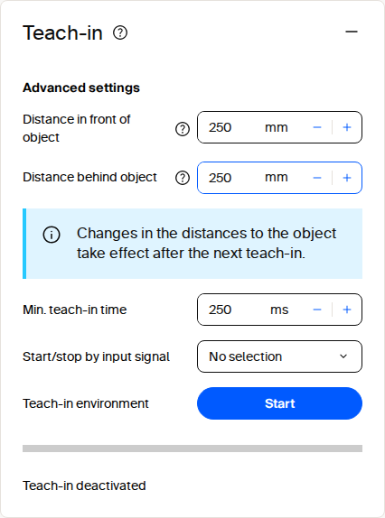

Field Evaluation¶
The sensor evaluates detection zones on the device. Field evaluation checks whether scan points enter a configured polygon and reports whether the field is free or infringed. The result can drive a digital output and can be read through REST, CoLa, or WebSocket events. In SOPASair, field evaluation is the Object Detection application; both names mean the same function.
Field Evaluation: term and meaning.
| Term | Meaning |
|---|---|
| Evaluation | One field (polygon) with its detection parameters, stored in an evaluation slot |
| Evaluation slot | Numbered storage place for one evaluation, for example Eval001 |
| Group | One or more evaluations that are activated together |
| Activation type | When a group is evaluated: always, by digital inputs, or by telegram |
| Result | Per evaluation: free or infringed; per group: active, inactive, or not configured |
picoScan100: How to draw fields and detect objects?
Configure in the Web GUI¶
Open the Object Detection application in SOPASair to create and edit polygon points directly. This is the quickest method for commissioning and manual adjustments. The field editor also supports teach-in.

Field evaluation teach-in tile in SOPASair.
For bulk coordinate changes, open the Field settings dialog and select JSON in its footer toolbar. The editor switches from the coordinate table to a JSON text field. Paste the prepared polygon to replace all points at once:
{
"points": [
{ "x": -5, "y": 531 },
{ "x": 837, "y": 565 },
{ "x": 907, "y": -637 },
{ "x": 12, "y": -590 }
]
}
Copy to Other Devices¶
Use the top-right SOPASair menu to download the complete configuration from a commissioned sensor. It includes field geometries and can be imported into another compatible device, making it suitable for repeatable commissioning and replacement devices. Keep a versioned, validated backup for each deployed configuration.
Teach In¶
Teach-in captures the current environment and uses the measured contour as a field for object detection. Use it during commissioning when the surrounding geometry should define the detection field instead of drawing a polygon manually.
Open the Object Detection application in SOPASair and select Teach-in in the field configuration. Set the distances in front of and behind the object, choose the minimum teach-in time, and click Start. Stop the teach-in when the environment has been captured, then save the field evaluation configuration.
Teach-in configuration in SOPASair.
The configured distances take effect during the next teach-in. Keep the intended environment stable while the contour is captured.
Teach-in uses the same evaluation group and output mechanism as a manually configured field. After the contour has been captured, monitor the evaluation result through the configured output, REST, CoLa, or WebSocket events.
Minimum Object Size¶
The farther an object is, the wider apart the beams are, so small objects can fall between them. Select a device family, scan configuration, target, and object size to estimate up to which range the object is still detected. Device presets fill in the model-specific values from the operating instructions. Select Custom Values to adjust angular resolution, beam divergence, minimum spot size, and scanning range.
Result
Maximum range ?Smallest of the width limit, enabled height limit and target scanning range. This is a geometric planning estimate, not a detection guarantee. | – |
|---|---|
Range limit from the width ?Geometric range supported by the entered width, before applying the height check or target scanning-range cap. | – |
Range limit from the height ?Geometric range supported by the entered height, before applying the width check or target scanning-range cap. Height 0 disables this check. | – |
Scanning range for the target ?Preset range cap for the selected target. picoScan diffuse-target values are typical at 10 klx; multiScan100 values use 10 klx. Footnote 1 marks a working-range fallback, not a specified target range. | – |
Minimum object width at maximum range ?Minimum width from the selected model at the calculated maximum range. If no positive range exists, it is shown at the scanning-range cap instead. | – |
Minimum object height at maximum range ?Minimum height at the calculated range, using layer gaps or the LRS4000 vertical spot. Shown only when the height check is enabled. The multiScan model follows the published size table. | – |
Spot width at maximum range ?Horizontal beam footprint at the calculated range: initial spot plus divergence times distance. This is separate from the minimum object width. Blank means the preset has no verified divergence for this mode. | – |
Spot height at maximum range ?Vertical beam footprint at the calculated range: initial spot plus vertical divergence times distance. A 2D scanner still has a vertical beam footprint. | – |
1) Not specified for this target; the working range is shown.
Minimum object size over the range. The maximum range is where the curve reaches the object size, capped by the scanning range for the selected target.
These results are estimates only. Testing the individual object in its actual position and operating conditions is necessary; the calculator does not guarantee detection. The LRS4000, multiScan100, and picoScan100 presets use the corresponding model-specific operating-instruction data and formulas.
Activate and Monitor a Group¶
Activate and Monitor a Group: REST resource and purpose.
| REST resource | Purpose |
|---|---|
ActivateEvaluationGroup |
Activates or deactivates a TELEGRAM-controlled group |
FieldEvaluationGroupState |
Group state: not configured, active, or inactive |
FieldEvaluationResult |
Current result: FREE, INFRINGED, or a transitional state; also available as a WebSocket event |
A typical application creates the groups once, persists the configuration, and at runtime reads the group state and result, updates contours when necessary, and switches telegram-controlled groups.
For full payloads, see the LRS4000, multiScan100, multiScan200, and picoScan100 REST API references and the CoLa telegram listings for LRS4000, multiScan100, multiScan200, and picoScan100.
Activation types (Activation.Type of a group). ActivateEvaluationGroup only switches TELEGRAM groups:
Activate and Monitor a Group: value, type, and behavior.
| Value | Type | Behavior |
|---|---|---|
0 |
Deactivated | The group is never evaluated. |
1 |
Always | The group is active as soon as it is stored. ActivateEvaluationGroup returns false for it and cannot switch it off. |
2 |
Inputs | Digital inputs activate the group. |
3 |
Telegram | The group starts in the state set by InitialActivationStateTelegram and is switched with ActivateEvaluationGroup. |
FieldEvaluationGroupState returns one value per group: 0 not configured, 1 active, 2 inactive. FieldEvaluationResult returns one state per evaluation: 0 not configured, 1 inactive, 2 free, 3 detecting infringed, 4 infringed, 5 detecting free.
Configure over the API¶
On all devices, create the evaluations in SOPASair or restore them from a configuration file; REST and CoLa can then change them. On the picoScan100, REST and CoLa can also build complete evaluations from scratch. The following workflow applies to picoScan150 with firmware V2.3.3. Some of these variables, such as Eval001–Eval048 and EvaluationGroupMapping, are not listed in the published OpenAPI file, but can be read and written as REST variables (GET / POST /api/<Variable>).
Configure over the API: variable or method, purpose, and devices.
| Variable or method | Purpose | Devices |
|---|---|---|
Eval001–Eval048 |
Detection parameters of one evaluation slot: mode, minimum object size, timing, and the referenced volume (VolumeList) |
picoScan100 |
SetFieldEvaluationContour / GetFieldEvaluationContour |
Writes or reads the polygon of an evaluation | LRS4000, multiScan100, multiScan200, picoScan100 |
SetFieldEvaluationConfiguration / GetFieldEvaluationConfiguration |
Writes or reads evaluation parameters | multiScan200 |
EvaluationGroupMapping |
Groups evaluations and sets the activation type of each group | picoScan100 |
EvaluationGroupType |
Selects field evaluation or perpendicular-distance mode | LRS4000, picoScan100 |
PortConfiguration |
Assigns an evaluation result to a digital output | LRS4000, multiScan100, multiScan200, picoScan100 |
WriteEeprom (REST) / mEEwriteall (CoLa) |
Stores the configuration permanently | LRS4000, multiScan100, multiScan200, picoScan100 |
To create an evaluation on the picoScan100, log in as Authorized client or Service and write the variables in this order:
- Write
EvalNNNwith the detection mode, the minimum object size, andVolumeList = [NNN]. - Write the polygon with
SetFieldEvaluationContour. It returns error1(invalid evaluation) ifVolumeListof the slot is empty, so write the slot first. - Write
EvaluationGroupMapping. The whole array is replaced on every write: read the current mapping first and include every group you want to keep. - Optional: write
PortConfigurationto switch a digital output when the evaluation is infringed. Outputs refer to evaluations (sourcesEG01–EG48), not to groups, and the whole port array must be written. - Call
WriteEeprom. The device re-initializes; wait about 1 s before reading the state. - For a
TELEGRAMgroup, switch it on withActivateEvaluationGroup.
To delete an evaluation, remove its group from EvaluationGroupMapping, clear VolumeList and the name of the slot, and call WriteEeprom. The group state returns to not configured.
The coordinates are in millimeters in the sensor coordinate system: x points forward (depth) and y to the side.
Detection modes (EvaluationParamsCommon.Mode of the evaluation slot):
Configure over the API: value, mode, and the field is infringed when.
| Value | Mode | The field is infringed when |
|---|---|---|
0 |
Blanking | An object at least as large as the minimum object size is inside the field. This is the most common mode. |
1 |
Reflector only | A highly reflective object such as a retroreflector is inside the field. |
2 |
Contour | The scan deviates from the taught-in contour by more than the tolerance. Requires a valid teach-in. |
Change a Polygon¶
The REST API exposes SetFieldEvaluationContour to update a polygon. The evaluation must already exist. Use GetFieldEvaluationContour to confirm the stored geometry and persist the change with WriteEeprom. See the REST client example.
CoLa provides the same SetFieldEvaluationContour function through its telegram interface. Use it when the integration already uses CoLa, such as a PLC or legacy client; see CoLa.
The sick_perception_sdk uses the REST interface and provides an application-level option for changing contours. See the object-detection example.
Teach in over the API¶
A teach-in evaluation is an evaluation slot with mode 2 (contour). The polygon written with SetFieldEvaluationContour is not the detection field: it is the region of interest in which teach-in learns the reference contour. GetFieldEvaluationContour therefore returns this region, not the learned contour.
Teach-in is global; it is not bound to an evaluation slot. Set the parameters, then start and stop the teach-in:
Teach in over the API: variable or method and purpose.
| Variable or method | Purpose |
|---|---|
TeachInToleranceFront / TeachInToleranceBack |
Tolerance in front of and behind the taught contour, in mm (default 250) |
TeachInMinimumTimeMs |
Minimum teach-in time, 100 to 60000 ms (default 250) |
TeachInActivationInput |
Digital input that starts the teach-in; 0 = software only |
StartTeachIn / StopTeachIn |
Starts and stops the teach-in |
TeachInActive |
1 while the teach-in runs |
TeachInContourValid |
1 after a teach-in produced a valid contour |
Keep the scene stable for at least the minimum teach-in time, stop the teach-in, check TeachInContourValid, and call WriteEeprom. To change the field later, repeat the teach-in, for example with a larger tolerance; the region of interest stays the same.
Distance-Dependent¶
The Distance-dependent parameter determines whether two detected objects are evaluated separately or merged into one object based on their axial separation. It works with the configured Blanking width to avoid triggering a field evaluation when separate small objects would otherwise appear as one large object.
picoScan100: 2D Object Detection Parameter Distance-dependent.
The video uses two objects: a foreground object approximately 60 mm wide, a background object approximately 250 mm wide, and about 450 mm of axial separation. The standard blanking width is 300 mm.
Example: configuration, result, and explanation.
| Configuration | Result | Explanation |
|---|---|---|
| Distance-dependent off | Field infringed | Both objects merge into one contiguous object wider than 300 mm. |
| Distance-dependent on; threshold 300 mm | Field not infringed | The objects are at least 300 mm apart and are evaluated separately; neither is wider than 300 mm. |
| Distance-dependent on; threshold 500 mm | Field infringed | The objects are less than 500 mm apart, so they merge and exceed the blanking width. |
Set the separation threshold to the distance at which nearby objects should be merged for your application.
Ground Filter (multiScan100)¶
The ground filter uses upper and lower ground thresholds to reduce false field-evaluation triggers caused by the ground. When configured correctly, it retains small objects such as forklift tines and can be used indoors and outdoors. The filter also affects perpendicular-distance evaluations. See Ground Filter for availability and API settings.
multiScan1xx: Ground-filter behavior in a field application.